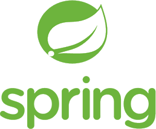
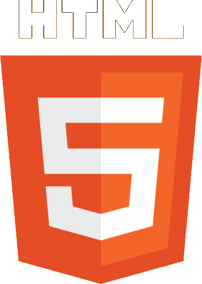
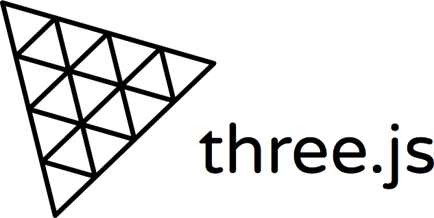

무슨 일을 했어요?

기본 - Web 풀스택 개발
보통 레거시 시스템에서 Spring 기반의 Web 풀스택 개발을 진행했습니다.
신규 소규모 시스템을 만들 때, 외부 인터넷이 불가능한 (maven dependency을 사용할 수 없는) 내부환경에서
자바 Dynamic Web Project 기반에서 Spring 프레임워크를 수동 설치하여, 개발 및 배포할 수 있습니다.
그 외 Web 경험으로,
node.js express, C# asp.net, php codeigniter, python django 등 다른 언어들의 웹 프로젝트를 진행해본 경험이 있습니다.
경험이 짧아 각 프레임워크 별 큰 이해는 없지만, 다른 언어를 통해 개발을 진행해야할 때, 두려움이 별로 없습니다.
2020.01 ~ 현재
삼성전자 MES4.0 제조설계 운영
업무
-
고객 응대
저는 이 시스템 모듈 업무/개발에 대해 누구보다도 잘알고 있습니다.
개발자, 설계자, 매니저, 고객등 관계자들은 모르는 내용이 있으면, 모두 저에게 문의합니다.
고객의 요구로 저는 개발 프로젝트 이후, 계속 이 업무를 맡아 진행하였으며,
이 시스템 모듈 핵심 인력이 되어, 없어선 안될 위치에 있습니다.
-
시스템 모듈 운영
개발 프로젝트에서 만든 2D/3D 솔루션 Web 기능을 개선/유지보수 합니다.
모든 개발 설계를 진행합니다. 공수를 산출하고, 고객과 협의하여, VOC를 진행합니다.
Web 개발 내용은 프리랜서 개발자에게 업무를 할당하며,
솔루션 관련 내용은 저나 회사 동료가 맡아서 진행합니다.
저의 주 개발 내용은 단순 VOC가 아닌 3D 시뮬레이션 애니메이션 플레이어 / 3D 동영상 녹화 다운로드 / 2D 시뮬레이션 기능 추가 등 모두 난이도가 높은 항목들이며,
개발량이 많고, 영향범위가 넓은 항목이 대부분이라 테스트 코드를 작성했고, 테스트하여 반영합니다.
저는 InterMax에 능숙하진 않지만, 장애가 발생한 경우, 트랜잭션 기록을 통해 장애원인을 일부 이해할 수 있습니다.
또한 Kubernates web app을 통해 pod 로그를 보고, 커널에 접속하여, 실제 장애 원인을 파악합니다.
-
사례
3D Viewer 동영상 다운로드 기능
운영하는 모듈에 시뮬레이션 애니메이션 기능이 탑재되어 있는데, 이를 다운로드하는 기능입니다.
시스템 서버 외, 유틸성 서버가 하나 있는데, 이 곳에 노드 RestAPI 서버를 하나 만들고, 이미지 목록을 전달하면,
ffmpeg를 통해 비디오를 다운로드 받도록 하였습니다.
이미지양이 상당해서 트랜잭션을 분리하여 업로드하도록 API를 만들었습니다.
클라이언트는 다운로드 API를 통해 업로드한 이미지를 영상으로 제작할 수 있습니다.
highcharts server
해당 시스템에는 메일 전송 기능이 있는데, 메일에 그래프 결과를 받고 싶어하는 요구가 많아졌습니다.
메일에는 보안상의 이유로 iframe이나 script 요소를 넣을 수 없어, 이미지를 입력해야만 했습니다.
하지만, highcharts는 클라이언트 라이브러리이므로, 자동 메일을 전송하기 위해 배치나 콜백을 사용하면, 이미지 첨부를 하지 못했습니다.
공통 모듈에서 개발해주면 좋겠는데, 그러지 못하여, 유틸 서버에 highcharts 서버 app을 설치하였습니다.
시스템에는 개발자 누구나 사용하기 쉽게 그래프 입력 문자열만 넣으면 base64이미지를 얻을 수있는 클래스를 간단하게 설계하여 만들었습니다.
사실 개발 내용이 별게 없는데, 관계자들은 어려운 내용을 개발하신줄 알고있고, 각 모듈에서도 사용할 수 있어서 좋아하셨습니다.🤭
spring boot
nexacro
InterMax
Kubernetes
ffmpeg
highcharts
threejs
canvas
2021.05 ~ 2021.10
수원 GTC 설계 사전 검증 플랫폼 개발
spring
threejs
2020.07 ~ 2020.11
실시간생산최적화솔루션
2019.06 ~ 2019.12
삼성전자 MES4.0 제조설계 2단계 개발
2018-12 ~ 2019-05
중국 서안 반도체 MSDS 관리체계 개선
2018.03 ~ 2018.10
수원 삼성전자 3D Factory관제 플랫폼 고도화 구축
2017.09 ~ 2017.12
수원 삼성전자 3D엔진 요소기술 구축
2017-03 ~ 2017-08
삼성 반도체 방폭개소 리스크통합관제 횡전개
2017-02 ~ 2017-03
SmartGeoKit Layout Manager 솔루션 개발
2017-01 ~ 2017-02
SmartGeoKit CAD Converter 개발
2016-12 ~ 2017-01
SmartGeoKit CADView개발
2016-03 ~ 2016-12
삼성 반도체 통합방재 방폭개소 통합관제 시스템 개발
2016-03 ~ 2016-12
삼성 반도체 환경안전법규대응
2015-10 ~ 2016-01
협력사 WorkPlace 개발
2015-07 ~ 2015-10
디스플레이 도면관리시스템 횡전개
2015-05 ~ 2015-07
디스플레이 통합방재 위치표준화
2015-04 ~ 2015-05
디스플레이 통합방재 CCTV 연계
2015-03 ~ 2015-04
반도체 모바일사건사고
어떤 기술을 보유했죠?

Web 2D 개발
저는 Web 기반의 그래픽 엔진/솔루션을 주특기로 개발했습니다.
바닐라 JS로 HTML5 Canvas 기술을 이용한 자작 100% 2D 라이브러리를 만들었고, 그 라이브러리를 기반으로 회사 여러 프로젝트에 기여를 하였습니다.
저는 그래픽 전문가는 아니지만, Web에서 그래픽을 표현하는 작업에 능숙합니다.
지역좌표, 전역좌표, 좌표계 등 좌표 시스템을 이해하며, 간단한 벡터, 행렬 계산을 통해 좌표를 구해낼 수 있고,
공간, 카메라, 렌더러, 객체의 기본적인 그래픽 구조 체계를 이해하고 있습니다.
아래 동영상들은 제 모든 개발 기록은 아니지만, 저를 대표할 수 있는 사례들 입니다.
2D 공장 모니터링 데모
2D 라이브러리를 새로 만든 직후 개발했던 데모입니다. 기존 2D 라이브러리는 모듈화가 덜 되어, 기능 변경/추가가 쉽지 않았는데,
커스텀을 자유롭게 할 수 있도록 단점을 전부 보완하였습니다. 영업팀이 고객사에서 2D 기능을 간단히 시연할 때, 자주 사용되는 데모입니다.
특이사항
기획 100%
개발 100%
설비 모니터링
2D 공장 시뮬레이션 데모
고객과 자주 소통을 해보니, 사람들이 움직이는 그래픽을 선호한다는 것을 알았습니다.
그래서, 2D 애니메이션을 구현해야겠다는 생각을 자주 했고,
좋은 기회에 공장 라인 시뮬레이션 업무를 접하게 되면서, 동료 개발자와 자체적으로 아래 데모를 만들었습니다.
특이사항
기획 100%
원격 협업
객체 애니메이션
현실 시간 시뮬레이션
2D 경로 드로잉 데모
업무 특성상, 실내 지도 이미지를 자주 접했습니다. 각 시스템 관리자들은 각각의 이유로 지도상 노드/경로를 관리하고 싶어했습니다.
우연히, 고객사 사업장 내부가 아닌 외부에서 프로젝트를 진행하던 중, 친한 고객의 부탁으로 데모를 만들었습니다.
회사에는 시연할 수있는 2D 예제가 하나늘었고, 고객은 원하는 샘플을 얻을 수 있었습니다.
특이사항
기획 100%
개발 100%
경로 관리
2D 렌더링 성능 비교
남들과는 좀 다른 웹 개발을 진행하다보니, 항상 성능에 대한 이슈를 고민해야했습니다.
업무 특성상 많은 객체를 요구하는 시스템이 많았습니다.
2D 라이브러리에 이미지 캐싱, 타일 좌표 관리, AABB 충돌, 메모리 관리 등 성능 최적화를 적용해야했습니다.
아래 동영상의 타일 이미지 기능에 대한 성능 비교를 합니다. 표현 개체수 대비 렌더링 속도, 해상도를 비교하는 내용이며,
이런 테스트를 통해, 현장에서 최적의 렌더링 효과를 적용할 수 있도록 가이드 했습니다.
특이사항
기획 100%
개발 100%
성능 테스트

Web 3D 개발
운이 좋게 Web 방재 시스템 내 3D 모니터링 구축 프로젝트를 진행하게 됐습니다.
3D의 '3'자도 몰랐던 저는 당시 연구소 소장님을 만나 THREE.js를 배웠습니다.
이후, 고객사 연구소와 2년간 프로젝트를 진행하며, THREE.js기반의 Web3D 엔진을 개발하였고, 이 엔진은 현재까지도 고객사 내부 시스템에 사용되고 있으며, 엔진 관련 문의 전화도 지속적으로 오고 있습니다.
저는 THREE.js를 사용하는 데 능숙합니다. 처음 56버전부터 사용하여, 현재 137버전까지 계속 사용해왔습니다.
좋은 성능을 위해 material과 geometry를 공유하여 사용하고 재활용하며, 불필요한 경우, dispose 처리합니다.
merge나 instancedMesh를 활용하여, 많은 객체를 표시할 수 있습니다.
obj/mtl, fbx, gltf, collada 등 외부 3d 모델을 불러오고, 내보낼 수 있습니다.
아래 동영상 목록은 2D와 마찬가지로 3D 전체 기록은 아니고, 저를 대표할 수 있는 일부입니다.
3D 공장 뷰어
시스템에서 사용자가 3D 모델을 등록하면, 공장 뷰어를 통해 설비를 배치할 수 있습니다.
따라서, 모델파일을 동적으로 불러오며, 재사용 가능하도록 구현하였습니다.
또한, 이 프로젝트는 dxf 내보내기 기능이 특히 기억나는데,
모두 쉽지않을 것이라고 판단했지만, 가능한 방법을 찾아 테스트하고, 결국엔 성공했습니다.
짧은 기간 내 쉽지않은 기술을 확보하였고, 좋은 성과를 이뤄 냈습니다.
특이사항
기획 100%
개발 100%
1인칭 3인칭 시점 전환
멀티선택
설비 애니메이션
dxf 내보내기
3D 라이브러리 뷰어
사용자가 시스템에서 3D 라이브러리를 관리할 때, 표시되는 뷰어입니다.
사용 가능 포맷은 obj/mtl, fbx, collada, gltf, THREE.Object3D 입니다.
모델을 불러오면, API를 통해 객체 자동 회전, 애니메이션 실행, yz축 전환, 썸네일 추출 등을 사용할 수 있습니다.
기본은 3D 모델만 표현되며, 각 환경마다, animation 목록 / 하단 썸네일 / 옵션등은 필요에 따라 구현 해야합니다.
굉장히 자주 사용되는 기능이여서, 회사 자체 모듈로 만들고 싶었습니다.
고객사 사업장 내부가 아닌 본사에서 작업하기 위해 PM에게 설득/요청하였고, 승낙을 받아내어
이제는 3D 라이브러리 뷰어를 어디서든지 쉽게 구현할 수 있게되었습니다.
특이사항
기획 100%
개발 100%
설비 애니메이션
시뮬레이션 플레이어
공장에선 생산성을 높이기위해 작업이나 공정, 레이아웃, 작업자, 설비 등을 수정하여 시뮬레이션을 돌려봅니다.
이 때, 결과를 웹에서 볼 수 있도록 시뮬레이션 플레이어를 만들었습니다.
현재도 이 플레이어는 해당 시뮬레이션 시스템에서 활용중입니다.
최근에 다시한번 시뮬레이션 플레이어를 사업장에서 만들었습니다.
프로그래스바 구현을 위해 시뮬레이션 엔진 측에서 프레임당, 혹은 몇 초당 자재와 이송기의 위치정보를 기록하여 API를 만들어주면 쉽게 구현이 가능했을텐데,
그렇게 하지 못해 결과를 기반으로 애니메이션을 만들어 냈습니다.
난이도에 비해 생각보다 완성도가 높게 나와 고객께서 매우 좋아하셨던 기억이 납니다.
로직설명 보기
3D 레이아웃을 기반으로 자재가 지나갈 수 있는 모든 경로를 추출하고, 각 경로 별 거리를 구하여, 평균을 구하고, 최종 출력 자재수와 총 시뮬레이션 시간을 통해 평균속도를 구했습니다.
매 프레임 별 객체 위치를 데이터로 생성해냈는데, 공정의 작업시간과 경로의 거리를 통해 이동/정지 시간을 결정했습니다.
공정의 분기 시작에서는 경로 별 자재가 제일 적게 나가고, 현재 이송대기가 없는 곳을 우선으로 자재를 배분했고,
공정의 분기 종료에서 자재가 제일 적게 나간 곳을 기준으로 자재를 우선 내보냈습니다.
특이사항
기획 100%
개발 100%
시뮬레이션 플레이어
이동 방향 표시
다층구조
모델 애니메이션
스마트 팩토리 시연 샘플
솔루션 비용이 비싸고, 표현할 객체는 많고, 설비 모델은 너무 상세하여, web에 표시할 수 없던 기존 솔루션을 대체하기 위한 시연 샘플을 만들었습니다.
빠른 속도를 위해 THREE.js의 InstancedMesh(drawing call을 줄이는 방식)를 사용했으며, 애니메이션은 없고, 그림자도 없애고, 단일 재질을 사용하였습니다.
단일 단순 재질을 사용하게되면, 3D에서 물체 구분이 잘안되는데, 이를 극복하기위해 라인을 표시하였습니다.
무거운 모델을 단순화하기 위해 무료 최적화 툴을 사용하였고, 일괄 모델 단순화 작업을 진행하여, 용량이 큰 모델의 경우 200MB -> 3MB 정도로 줄였습니다.
짧은 기간 내에 높은 완성도와 어려운 내용을 잘 풀어 고객꼐서 시연하시는데, 매우 흡족하셨습니다.
회사 또한 이를 계기로, 좋은 사업을 진행할 수 있게 되었습니다.
( 아래 동영상은 보안상의 이유로 블라인드 처리하였습니다. )
특이사항
기획 100%
개발 100%
60fps
대규모 객체
대용량 모델 단순화